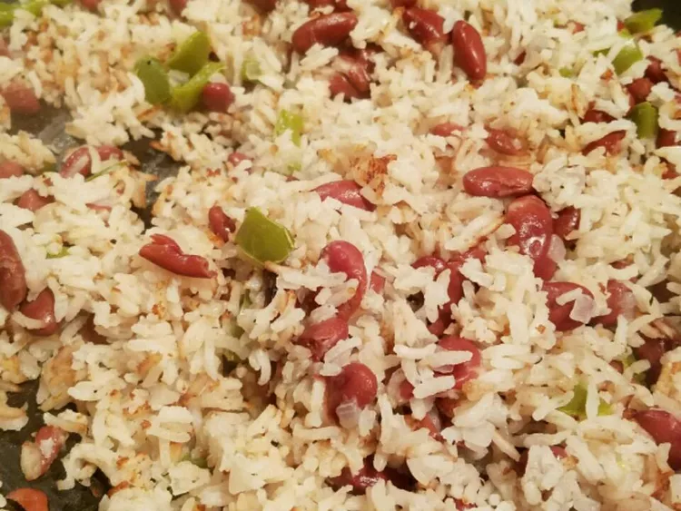

Belizean Rice and Beans

Description
Rice and beans are a staple in my country, Belize. This traditional Belizean recipe is super delicious, and coconut milk gives it an original flavor. It goes great with stewed chicken and potato salad or cole slaw.
Ingredients
- 1 pound dry kidney beans
- 1 1/2 quarts water, or as needed
- 3 cloves garlic, minced
- 1/2 medium onion, chopped
- 1/2 medium red bell pepper, chopped
- 1 teaspoon vegetable oil
- 1/2 teaspoon salt
- 1/4 teaspoon ground black pepper
- 1 cup white rice
- 3/4 cup coconut milk
- 3/4 cup water
Steps
- Place kidney beans into a large container and cover with several inches of cool water; let stand 8 hours to overnight.
- Drain and transfer beans to a stockpot. Add 1 1/2 quarts water (or as needed to cover) and bring to a boil. Add garlic, reduce the heat to low, and simmer until beans are tender, about 1 hour. Remove from the heat and stir in onion, bell pepper, oil, salt, and pepper.
- Cook and stir rice in a large saucepan over low heat until toasted and fragrant, about 3 minutes. Add coconut milk, 3/4 cup water, and kidney beans; bring to a boil. Reduce the heat to low, cover, and cook until rice is tender, 30 to 40 minutes.